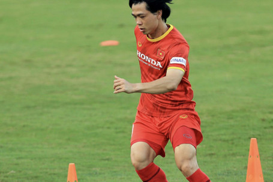
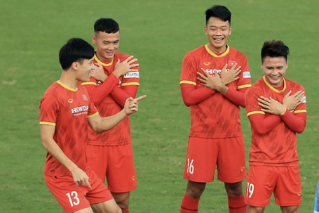
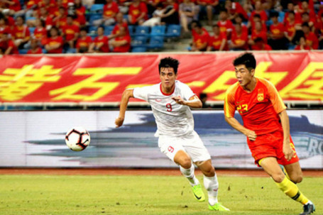
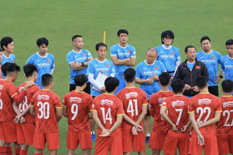
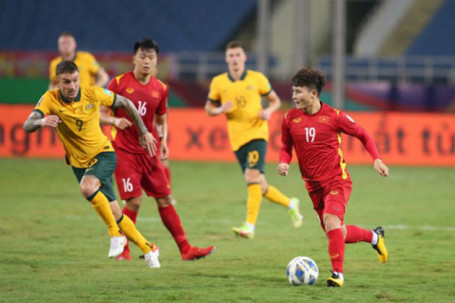

-

HLV Park Hang Seo vừa chính thức công bố danh sách 27 tuyển thủ Việt Nam chuẩn bị cho 2 trận đấu trước Trung Quốc và Oman ở vòng loại cuối cùng World Cup 2022 khu vực châu Á.
-

“Những chiến binh sao vàng” vừa trải qua bài kiểm tra cuối cùng trước khi lên đường đi UAE chuẩn bị cho cuộc đối đầu với ĐT Trung Quốc ở vòng loại thứ ba World Cup 2022 khu vực châu Á.
-
(Nhận định bóng đá Atletico Madrid - Barcelona, 2h, 3/10, vòng 8 La Liga) Koeman đứng...
-

Cuộc so tài giữa ĐT Việt Nam và ĐT Trung Quốc ở bảng B vòng loại World Cup 2022 khu vực châu Á có thể diễn ra vào lúc nửa đêm ngày 7/10 tại UAE.
-
Công Phượng và Văn Toàn rủ nhau ghi bàn trong trận đấu tập giữa ĐT Việt Nam và đàn em U22 Việt Nam chiều ngày 19/9.
-

Thầy trò HLV Park Hang Seo bắt đầu bước vào giai đoạn tập chiến thuật quan trọng chuẩn bị cho cuộc đối đầu với ĐT Trung Quốc ở bảng B vòng loại cuối cùng World Cup 2022 khu vực châu Á (ngày 7/10).
-

Liên đoàn bóng đá châu Á đã có những đánh giá không tốt với sân Mỹ Đình, đồng thời đưa ra thời hạn để chủ nhà Việt Nam nâng cấp các hạng mục.